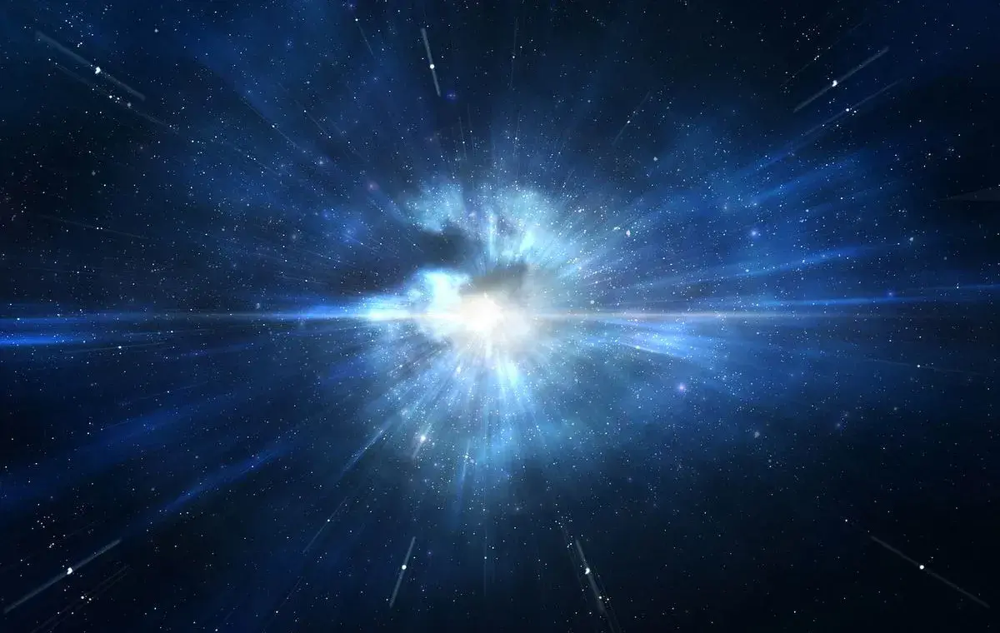

بیگ بنگ چیست؟ آغاز جهان و رازهای آن
بیگ بنگ یا مهبانگ، نظریهای است که توضیح میدهد جهان چگونه آغاز شده است. طبق این نظریه، حدود ۱۳.۸ میلیارد سال پیش، تمام ماده و انرژی کیهان در نقطهای بینهایت کوچک و داغ متمرکز بود و سپس انفجاری عظیم رخ داد. در این مقاله جامع از دانشنما، به زبان ساده توضیح میدهیم که بیگ بنگ چیست، چه شواهدی برای آن وجود دارد و چرا این نظریه، پایهی کیهانشناسی مدرن است.
بیگ بنگ چیست؟
بیگ بنگ یک انفجار به معنای معمول نبوده است. یعنی مانند انفجار یک بمب در نقطهای از فضا نبوده که مواد به اطراف پرتاب شوند. بلکه بیگ بنگ، انبساط خود فضا بوده است.
تصور کنید کیهان مانند یک بادکنک است و کهکشانها نقاطی روی سطح آن. وقتی بادکنک را باد میکنید، نقاط از هم دور میشوند، اما در واقع روی سطح بادکنک حرکت نمیکنند. بلکه خودِ فضا میان آنها کشیده میشود. بیگ بنگ دقیقاً همین انبساط فضا است.
تاریخچه نظریه بیگ بنگ
ایده بیگ بنگ اولین بار در دهه ۱۹۲۰ توسط اخترشناس بلژیکی ژرژ لومتر مطرح شد. او با استفاده از معادلات نسبیت عام اینشتین، نشان داد که کیهان در حال انبساط است.
در سال ۱۹۲۹، ادوین هابل کشف کرد که کهکشانهای دورتر، با سرعت بیشتری از ما دور میشوند. این کشف، که به قانون هابل معروف است، تأیید بزرگی برای نظریه انبساط کیهان بود.
اما مخالفان زیادی هم وجود داشتند. فرد هویل، اخترشناس بریتانیایی، برای تمسخر این نظریه، اصطلاح «بیگ بنگ» را ابداع کرد. اما این نام، بعداً به عنوان نام رسمی نظریه پذیرفته شد.
شواهد بیگ بنگ
چند شاهد قوی برای نظریه بیگ بنگ وجود دارد:
۱. انبساط کیهان
کهکشانها در حال دور شدن از یکدیگر هستند. این یعنی کیهان در حال انبساط است. اگر این انبساط را به عقب برگردانیم، به نقطهای میرسیم که در آن، همه چیز در یک نقطه متمرکز بوده است.
۲. تابش زمینه کیهانی (CMB)
در سال ۱۹۶۴، دو دانشمند به نامهای آرنو پنزیاس و رابرت ویلسون به طور تصادفی، تابشی را کشف کردند که از همه جای آسمان میآمد. این تابش، همان نور باقیمانده از بیگ بنگ است که امروزه به طول موج میکروویو رسیده است. این کشف، یکی از قویترین شواهد بیگ بنگ بود.
۳. فراوانی عناصر سبک
بیگ بنگ پیشبینی میکند که در کیهان اولیه، فقط عناصر سبک مثل هیدروژن، هلیوم و لیتیوم تولید شدهاند. مشاهدات نشان میدهد که فراوانی این عناصر در کیهان، دقیقاً با پیشبینیهای بیگ بنگ مطابقت دارد.
۴. شکلگیری ساختارهای کیهانی
مدلهای رایانهای نشان میدهد که اگر کیهان با بیگ بنگ آغاز شده باشد، باید ساختارهایی مثل کهکشانها و خوشههای کهکشانی به شکلی که میبینیم شکل بگیرند. مشاهدات، این پیشبینی را تأیید میکند.
مراحل تکامل کیهان
طبق نظریه بیگ بنگ، کیهان از لحظه آغاز تاکنون، مراحل زیر را طی کرده است:
| زمان پس از بیگ بنگ | رویداد |
|---|---|
| ۱۰ به توان منفی ۴۳ ثانیه | زمان پلانک، شروع زمان و فضا |
| ۱۰ به توان منفی ۳۶ ثانیه | تورم کیهانی، انبساط سریع |
| ۱۰ به توان منفی ۶ ثانیه | تشکیل پروتونها و نوترونها |
| ۳ دقیقه | تشکیل هستههای اتمی (هیدروژن، هلیوم) |
| ۳۸۰,۰۰۰ سال | تشکیل اتمها و آزاد شدن نور (CMB) |
| ۱۰۰ تا ۲۰۰ میلیون سال | شکلگیری اولین ستارگان |
| ۱ میلیارد سال | شکلگیری اولین کهکشانها |
| ۹ میلیارد سال | شکلگیری منظومه شمسی |
| ۱۳.۸ میلیارد سال | امروز |
۱. زمان پلانک
اولین لحظه قابل تصور کیهان. در این لحظه، چگالی و دما بینهایت بود و قوانین فیزیک معمول از کار میافتادند. زمان و فضا از همین لحظه آغاز شدند.
۲. تورم کیهانی
در کسری از ثانیه، کیهان به طور انفجاری منبسط شد. این انبساط، بسیار سریعتر از سرعت نور بود و باعث شد کیهان یکنواخت شود.
۳. تشکیل اتمها
حدود ۳۸۰,۰۰۰ سال پس از بیگ بنگ، دما به اندازهای کاهش یافت که الکترونها توانستند به هستهها بپیوندند و اتمهای خنثی تشکیل شوند. در این لحظه، نور توانست آزادانه حرکت کند و تابش زمینه کیهانی (CMB) شکل گرفت.
ماده تاریک و انرژی تاریک در بیگ بنگ
یکی از جذابترین جنبههای بیگ بنگ، نقش ماده تاریک و انرژی تاریک است:
- ماده تاریک: حدود ۲۷٪ از کیهان را تشکیل میدهد و نقش کلیدی در شکلگیری کهکشانها داشته است.
- انرژی تاریک: حدود ۶۸٪ از کیهان را تشکیل میدهد و باعث انبساط شتابدار کیهان میشود.
- ماده معمولی: فقط ۵٪ از کیهان را تشکیل میدهد (ستارهها، سیارات، گازها و...).
آیا بیگ بنگ با مذهب در تضاد است؟
این سؤال مهمی است که بسیاری از مردم میپرسند. پاسخ کوتاه این است: نه، لزوماً.
بسیاری از دانشمندان و رهبران مذهبی معتقدند که بیگ بنگ و مذهب میتوانند با هم سازگار باشند. بیگ بنگ توضیح میدهد که جهان چگونه آغاز شده، اما نمیگوید چرا یا چه کسی آن را آغاز کرده است. این پرسشها همچنان در حوزه فلسفه و مذهب باقی میمانند.
پرسشهای بیپاسخ بیگ بنگ
با وجود موفقیتهای بیگ بنگ، چند پرسش مهم باقی مانده است:
- قبل از بیگ بنگ چه بود؟ آیا زمان و فضا از بیگ بنگ آغاز شدهاند، یا چیزی قبل از آن وجود داشته است؟
- چرا بیگ بنگ رخ داد؟ چه چیزی باعث انفجار اولیه شد؟
- آیا کیهان بینهایت است؟ یا اندازه محدودی دارد؟
- آیا کیهانهای دیگری هم وجود دارند؟ (نظریه چندجهانی یا Multiverse)
- آیا بیگ بنگ در نهایت به پایان میرسد؟ سرنوشت نهایی کیهان چیست؟
حقایق جالب درباره بیگ بنگ
- بیگ بنگ حدود ۱۳.۸ میلیارد سال پیش رخ داده است.
- در اولین لحظات، دما حدود ۱۰ به توان ۳۲ درجه بوده است.
- تابش زمینه کیهانی، نور باقیمانده از ۳۸۰,۰۰۰ سال پس از بیگ بنگ است.
- بیگ بنگ «انفجار» نبوده، بلکه «انبساط» فضا بوده است.
- بیگ بنگ مرکزی ندارد؛ همه جا مرکز است.
- کهکشانها همچنان با سرعت در حال دور شدن از هم هستند.
پرسشهای متداول
آیا بیگ بنگ یک انفجار بود؟
خیر. بیگ بنگ انفجار نبود، بلکه انبساط خود فضا بود. ماده به بیرون پرتاب نشد، بلکه فضا خودش کشیده شد.
آیا بیگ بنگ یک نقطه مرکزی دارد؟
خیر. بیگ بنگ در نقطهای از فضا رخ نداده است. فضا در همه جا در حال انبساط است و بنابراین بیگ بنگ مرکزی ندارد.
آیا قبل از بیگ بنگ چیزی وجود داشت؟
این یکی از بزرگترین پرسشهای بیپاسخ علم است. طبق نظریه بیگ بنگ، زمان و فضا از بیگ بنگ آغاز شدهاند، پس پرسیدن «قبل از آن» ممکن است بیمعنا باشد.
آیا بیگ بنگ ثابت شده است؟
بله، شواهد متعددی مثل انبساط کیهان، تابش زمینه کیهانی و فراوانی عناصر سبک، نظریه بیگ بنگ را تأیید میکنند. این نظریه، پذیرفتهشدهترین مدل کیهانشناسی است.
جمعبندی
بیگ بنگ یکی از بزرگترین دستاوردهای علمی بشر است. این نظریه، توضیح میدهد که جهان چگونه از یک نقطه بینهایت داغ و چگال آغاز شده و به کیهان امروزی تبدیل شده است. با وجود شواهد قوی، پرسشهای زیادی درباره بیگ بنگ باقی مانده است که پاسخ آنها میتواند درک ما از جهان را کاملاً تغییر دهد.
کشف بیگ بنگ، به ما یادآوری میکند که کیهان چقدر شگفتانگیز و پر از رمز و راز است. هر کشف جدید در کیهانشناسی، ما را یک قدم به درک منشأ و سرنوشت جهان نزدیکتر میکند.
اگر به مباحث فضایی علاقه دارید، پیشنهاد میکنیم این مقالات دانشنما را هم مطالعه کنید:
← بازگشت به صفحه اصلی
دیدگاهها